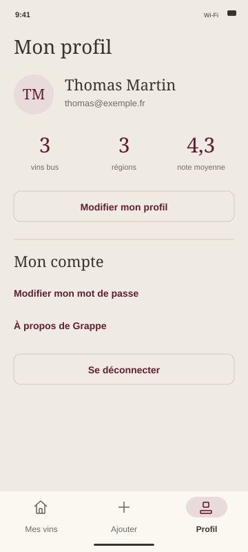
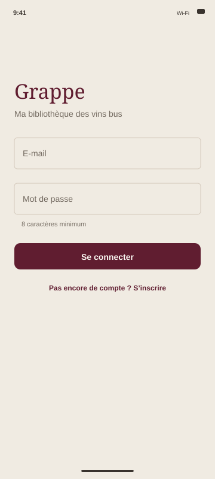
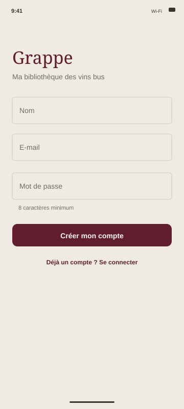
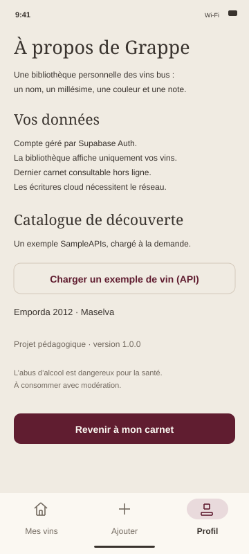
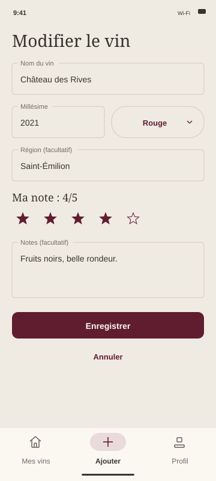
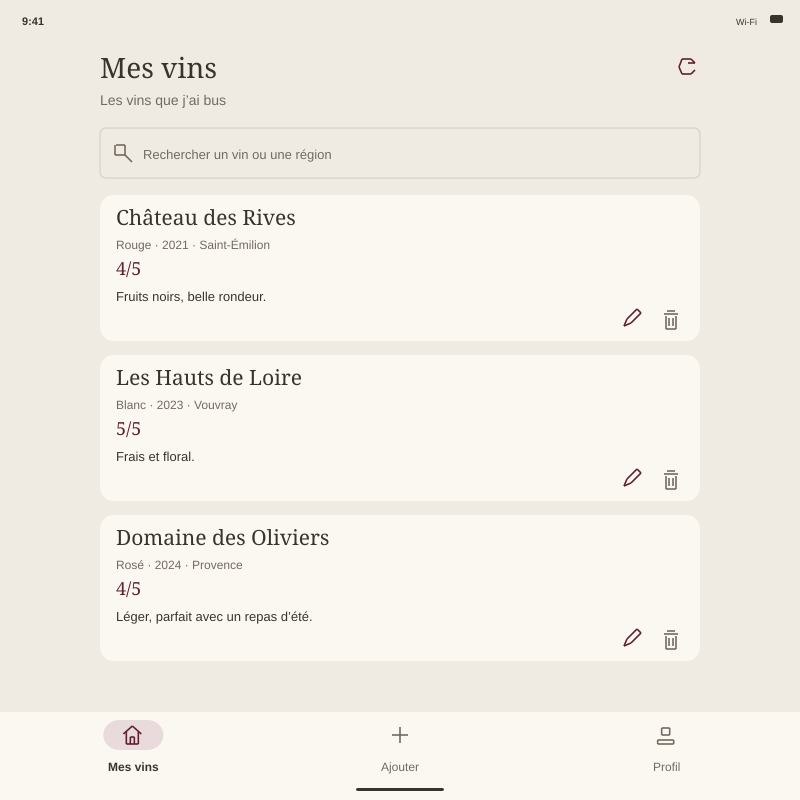
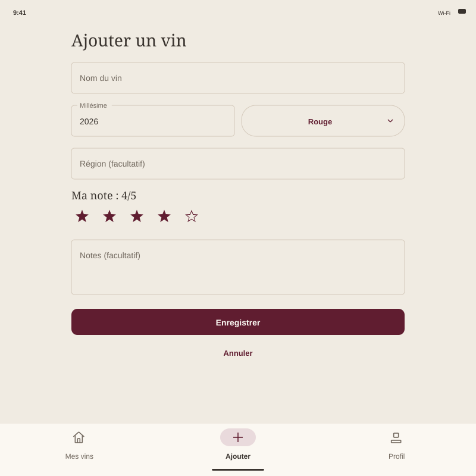

Grappe — Maquettes simplifiéesMes vins
 Télécharger le SVG
Télécharger le SVGAjouter un vin
 Télécharger le SVG
Télécharger le SVGProfil

Télécharger le SVGConnexion

Télécharger le SVGInscription

Télécharger le SVGÀ propos

Télécharger le SVGModifier un vin

Télécharger le SVGBibliothèque sur tablette

Télécharger le SVGFormulaire sur tablette

Télécharger le SVG